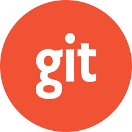

My documentation git and github learning

Git
Git adalah sistem kontrol versi terdistribusi yang digunakan untuk mengelola proyek perangkat lunak. Ini memungkinkan pengembang untuk melacak perubahan dalam kode sumber, berkolaborasi dengan tim, dan mengelola versi perangkat lunak dengan efisien.
Read more
Github
Github adalah layanan penyimpanan berbasis web untuk kontrol versi perangkat lunak. Ini menyediakan layanan penyimpanan untuk berbagai jenis proyek, termasuk perangkat lunak open source dan perangkat lunak komersial.
Read more